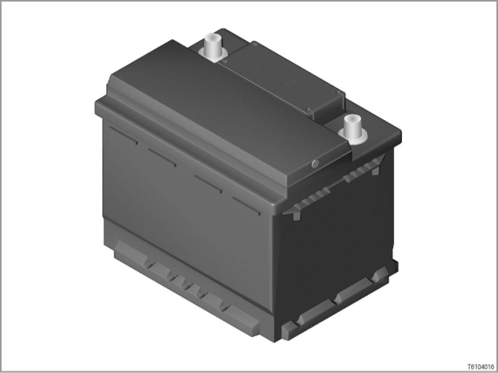
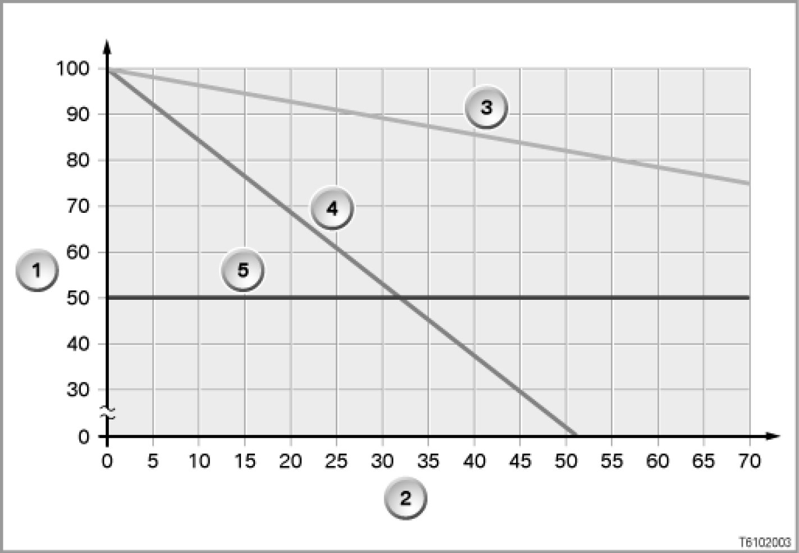
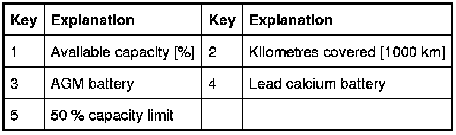
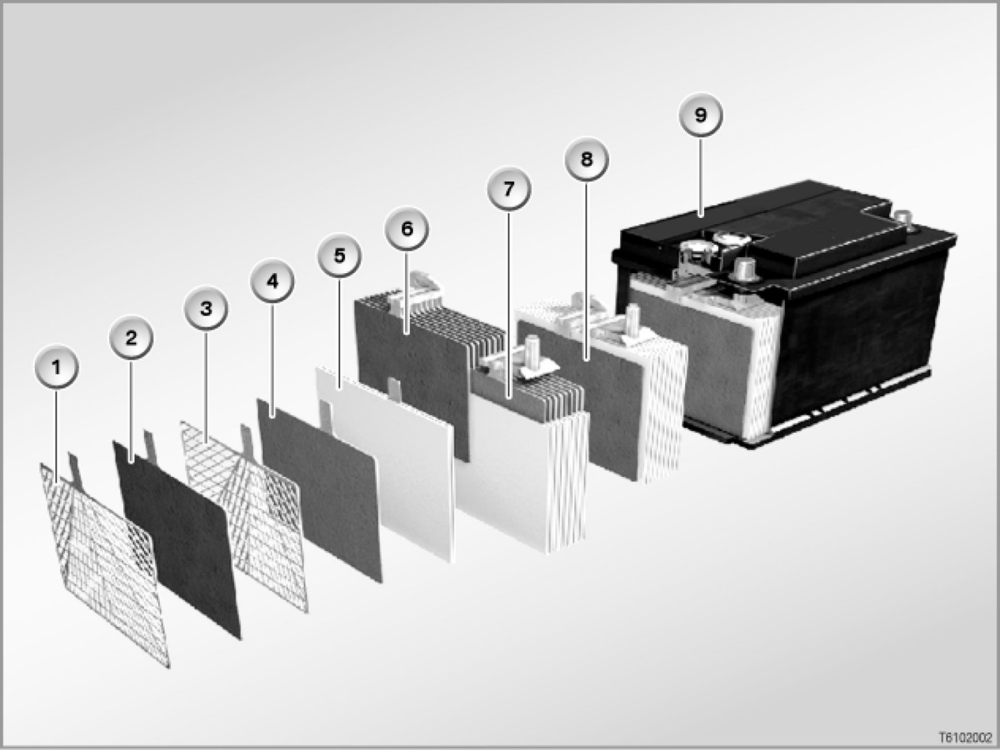
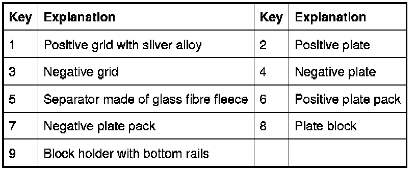

AGM Battery
61 20 ... - AGM battery

Introduction
In September 2002 so-called VRLA batteries, better known as AGM batteries, were introduced.
(VRLA stands for Valve Regulated Lead Acid, i.e. lead acid battery with pressure relief valve; AGM stands for Absorbent Glass Mat, i.e. absorbent glass fiber fleece)
AGM batteries are fitted in models with electrical loads/consumers which have a high energy demand.
With the option SA 146 (2nd battery), the AGM battery (70 Ah) is fitted as the 2nd battery.
The constantly increasing energy demand of modern vehicle electrical systems calls for ever more powerful battery solutions. Today, up to 100 servomotors, which have to be electrically powered, operate in a modern luxury-class motor vehicle. Added to these are safety, environmental and comfort and convenience elements which are increasingly becoming standard features, such as e.g. Anti-lock Brake System (ABS), Dynamic Stability Control (DSC), electric steering effort assistance (EPS), heated catalytic converter, electronic chassis and suspension control, air conditioning and navigation system.
The power consumption is considerable even when the vehicle is parked.
The somewhat higher price compared with a battery of similar size is fully balanced by the following benefits:
- Significantly longer service life
- Increased starting reliability at low temperatures
- Safe starting of engines with high starting current demands, e.g. high-performance diesel engines
- 100% freedom from maintenance
- Low risk in event of an accident (reduced risk to the environment)
Service life of AGM battery


Unlike the previously used lead calcium batteries, the sulphuric acid contained in batteries with fleece technology is not self-contained in the battery housing.
Instead, the sulphuric acid is 100% bound up in glass fiber fleece mats (separators). Thus, no acid can escape if the battery housing is damaged. In addition, the AGM battery is sealed gas-tight. This is possible because the gases are converted back into water as a result of the separator permeability.
Brief description of components
An AGM battery can be recognized by its black housing and the lack of a so-called "Magic Eye".


Design
The AGM battery differs from the conventional lead calcium battery as follows:
- Larger plates:
Larger plates provide for a 25% higher power density.
- Separators made of glass fiber fleece:
These provide for up to 3 times higher cycle reliability.
This in turn improves cold starting performance, current consumption and service life.
- Gas-tight housing with pressure relief valve (see also mode of operation):
The cell plugs are welded and cannot be opened.
- Acid bound up in the glass fiber fleece:
The acid is not as previously self-contained in the housing, but 100% bound up in the glass fiber fleece. This provides increased protection against acid leakage and thus represents a reduced risk to the environment.
Mode of operation
The AGM battery differs from conventional batteries in its non-polluting and substance-retaining behavior during charging.
When vehicle batteries are charged, the two gases oxygen and hydrogen are released by electrolysis.
- In a conventional wet lead calcium battery, the two gases hydrogen and oxygen are dissipated into the atmosphere.
- In an AGM battery, the two gases are converted back into water: The oxygen which is created at the positive electrode during charging passes through the permeable glass fiber fleece to the negative electrode. At the negative electrode the oxygen reacts with the arriving hydrogen ions in the electrolyte to form water (oxygen cycle).
In this way, the gas and thus also the electrolyte are not lost.
Only in the event of an excessively heavy buildup of gas, i.e. excessively high pressure buildup (20 to 200 mbar), does the pressure relief valve discharge the gas. In this process, the pressure relief valve does not allow any oxygen in the air to enter. Because a valve regulates the pressure in the battery, the AGM battery is also known as a VRLA battery (Valve Regulated Lead Acid).
Notes and instructions for service personnel
It is necessary when handling an AGM battery to observe some particular points pertaining to battery changing and installation location.
Charging
Warning! Do not charge the AGM battery with ≥ 15.2 V. No quick-charging routines!
When charging removed batteries (so-called stand-alone batteries), do not exceed the maximum charging voltage of 15.2 V at room temperature. Also when charging via the jump start terminal, do not exceed the maximum charging voltage of 15.2 V at room temperature.
The AGM battery will be damaged even when it is only briefly charged with a charging voltage of more than 15.2 V. A charging voltage of more than 15.2 V is usually used in quick-charging routines.
Installation location
Warning! Do not install the AGM battery in the engine compartment.
The AGM battery must not be installed in the engine compartment on account of the high spatial temperature differences, otherwise its service life will be significantly shortened.
Housing
Warning! Do not open the AGM battery.
The AGM battery must not be opened under any circumstances as the introduction of oxygen from the air will cause the battery to lose its chemical equilibrium and be rendered non-operational.
Battery changing
Any conventional lead calcium battery can always be replaced by an AGM battery.
Using an AGM battery does not require any alterations to be made to the vehicle electrical system.
Note: The AGM battery is recommended for "problem customers".
"Problem customers" encounter a high energy throughput through their batteries. This high energy throughput is caused by stationary loads/consumers (TV, independent heating, etc.) and a bad use profile for the battery ("chauffeur operation", short-distance driving, "stop-and-go"). The use of an AGM battery is recommended for these problem customers.